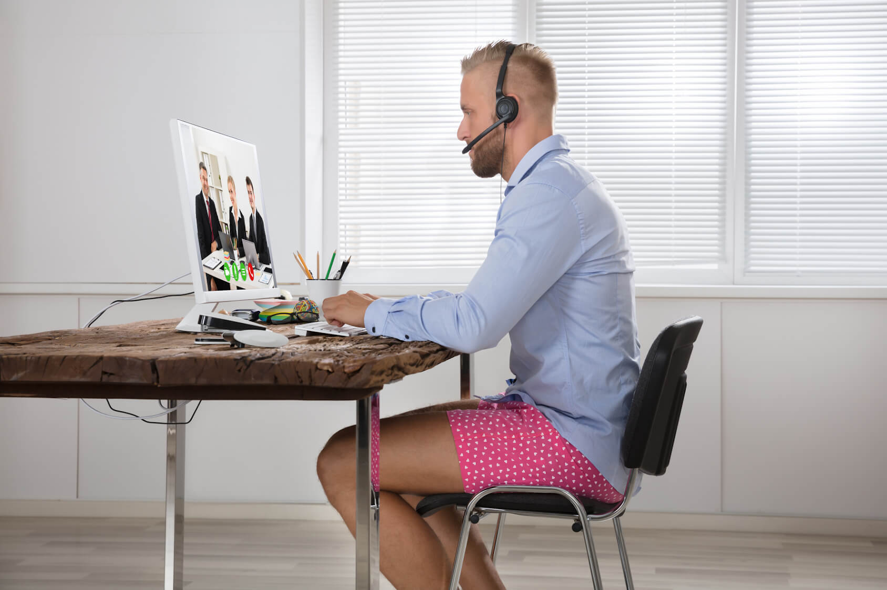
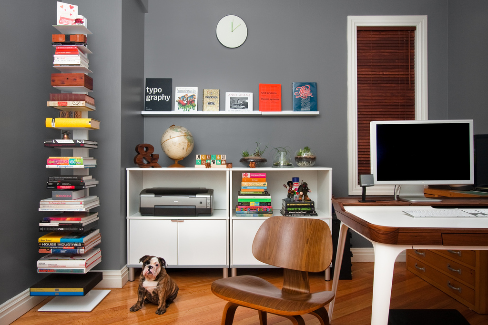

Conceito
Home office, também conhecido pela sigla SOHO (Small Office and Home Office) é uma expressão da língua inglesa, que em sua tradução literal significa "pequeno escritório e escritório em casa". É necessário ter em vista que a compreensão para o termo pode se dar de forma genérica, ou seja, são ambientes fora da empresa que funcionarão como escritórios/ estações de trabalho, não sendo obrigatoriamente a casa do colaborador. Ambientes como cafés, parques, bibliotecas, hotéis, aeroportos, entre outros, são comumente utilizados por profissionais que possuem a flexibilidade de trabalhar em home office, desde que ofereçam a estrutura necessária para o desenvolvimento das tarefas laborais. Obviamente, profissionais que trabalham diretamente com o público, tais como enfermeiros, caixas, não podem levar o trabalho para “casa”.
Vantagens e Desafios
Vantagens
Economia de tempo e dinheiro relacionado aos deslocamentos
O aproveitamento de tempo e dinheiro utilizado no deslocamento é uma das maiores vantagens deste modelo de trabalho. Atualmente, o alto preço dos combustíveis e o enorme fluxo dos automóveis nas vias o que gera engarrafamentos diários são fatores que estressam e desestimulam os colaboradores, antes mesmo da sua chegada na estação de trabalho. Os chamados horários comerciais, centralizam o fluxo de deslocamento da sociedade em geral, pais levando as crianças para a escola, estudantes indo para faculdade, os profissionais para o escritório. Todas estas atividades se dão no horário compreendido entre às 7 e 18hrs.
Portanto, na impossibilidade de permitir que o funcionário trabalhe no regime de home office, a flexibilização do horário de trabalho pode ser uma saída para auxiliar na fuga dos horários de pico gerando um melhor aproveitamento do tempo.
Sabe-se também, que os
Kati Morton, mestre e psicóloga clínica pela Universidade de Pepperdine, situada na Califórnia afirma que viagens diárias longas até o ambiente de trabalho tem efeito negativo direto na saúde mental, física e até mesmo na produtividade do profissional.
No dress code

A inexistência de dress code (código de vestimenta), abre a possibilidade de trabalhar da forma mais confortável possível, o que é outra grande vantagem do home office. Esqueça o terninho em dias de calor, além dos incômodos sapatos sociais. A preocupação sobre como se vestir diminui juntamente com a necessidade de impressionar visualmente seus colegas de trabalho. No home office você pode se preocupar apenas com a sua efetividade e produtividade na atividade, ou seja, é tudo sobre trabalho.
O seu ambiente de trabalho com a sua cara
A Flexibilidade de adequar o seu ambiente de trabalho de forma pessoal é sem dúvida outra grande vantagem do home office. Sabe-se que o processo de criação e concentração é pessoal. Portanto, no home office o trabalhador quem decide se o ambiente de trabalho deve ser embalado por sua bandas preferidas ou se o silêncio deve permanecer, a temperatura, grau de luminosidade, aromas do ambiente, entre outros fatores, são controlados unicamente pelo profissional. O que podem parecer detalhes mínimos, mas estão diretamente relacionados com a satisfação, conforto e produtividade.

Desafios e desvantagens
Vida pessoal vs vida profissional
A separação da vida pessoal do ambiente de trabalho não é considerada necessariamente uma desvantagem, mas sim um desafio no home office, principalmente para os profissionais que possuem crianças em casa. Sabe-se que os pequenos solicitam atenção constantemente, portanto definir horários, hábitos e rotinas pode ser um pouco mais desafiador. Cabe ao profissional definir meios para driblar esse desafio.
Disciplina e foco
Outro desafio encontrado pelos profissionais que trabalham em home office é manter a auto disciplina, compreender que mesmo estando em casa existe a necessidade de manter em mente todas as atividades a serem cumpridas naquele dia ou semana. Listas de tarefas e metas diárias, semanais e mensais podem auxiliar na manutenção do foco e atenção às atividades.
Overtime
Muitas das vezes, os colaboradores sofrem com a pressão dos seus chefes e mentores, o que pode levá-los a dedicar mais horas para finalizar com maestria as atividades laborais. Como no home office não existe o comum hábito de “bater ponto”, a falta de controle dos horários pelo próprio colaborador pode fazê-lo “gastar“ mais tempo nas atividades. Para driblar essa desafio o colaborador deve se organizar e controlar os horários. Com os parâmetros encontrados ele deve descobrir/ estudar qual a relação entre a sua produtividade e tempo dispensado, caso esta análise não seja harmônica medidas devem ser tomadas.
Isolamento social
O ambiente de trabalho, quando saudável, é um meio no qual se fazem colegas, amigos, pessoas que passam grande parte do dia juntos e acabam criando um vínculo. Portanto o desafio de trabalhar em home office é não se isolar socialmente, aproveitando as pausas e a flexibilidade de horários para manter os contatos sociais e profissionais. O que atualmente não é um problema, pois existem ferramenta como por exemplo o Zoom que possibilita que as distâncias sejam virtualmente encurtadas.
| Vantagens | Desafios |
| Otimização do tempo gasto em deslocamentos | Disciplina e foco |
| Economia financeira em tickets de transporte ou combustível | Overtime |
| Inexistência de dress code | Isolamento social |
| Possibilidade de adequar o ambiente de trabalho da forma mais pessoal |
Dicas
- crie rotinas, seja focado e disciplinado;
- mantenha o ambiente de trabalho limpo e organizado;
- faça listas de atividades para evitar procrastinar;
- aprenda qual e a melhor forma para você trabalhar, cada um funciona de forma diferente, tenha isso em mente;
- faça o controle de quantas horas do dia efetivamente são utilizadas nas atividades laborais;
- não se esqueça de se alongar, se hidratar e tenha muita atenção referente a ergonomia do seu ambiente de trabalho;
- solicite feedback aos seus chefes diretos e colegas de trabalhos, para que sejam verificados os ajustes a serem feitos, assim como os pontos positivos do seu trabalho.